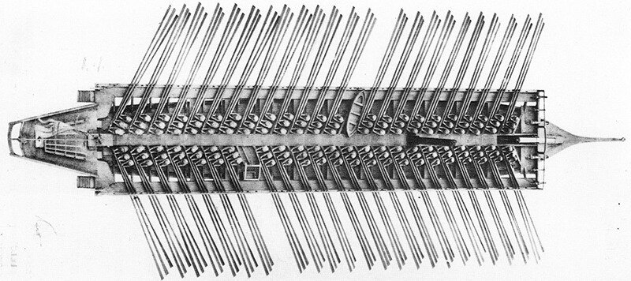
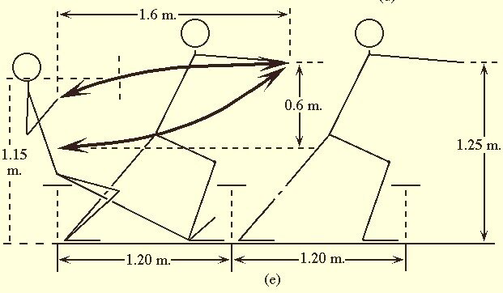

Что-то мы все кругами ходим, нет чтобы все расставить по своим местам и пойти дальше. Но не получается. И не только у нас одних. И вот почему. Кроме нескольких важных размеров, как-то ширина корпуса на мидель-шпангоуте, глубина трюма и длина весел, - ничего о системе alla sensile нам НЕИЗВЕСТНО. Все опубликованные схемы и рассуждения – это результат сравнения с античными аналогами, результат испытаний построенных реплик, таких как копия античной триремы Olympias, и результат нашей прославленной дедукции. Всё.
Еще в середине семидесятых годов девятнадцатого века французский адмирал и морской историк Жюрьен де ла Гравьер в парижском журнале Revue des Deux Mondes, постоянным корреспондентом которого он являлся, поместил статью, в которой в категоричной форме отрицалась «возможность оснащения галеры тремя веслами и тремя гребцами на одной банке, не только в случае трирем Древней Греции и Рима, но также и в случае относительно современных галер Венеции и Генуи.» Такая категоричность возмутила другого адмирала, на этот раз итальянского, Луиджи Финкати, который решил «на пальцах» объяснить французскому коллеге, а заодно и всем другим сомневающимся, возможность оснащения галеры ad tres remos ad banchum (тремя веслами на банку). Он изготовил большую модель венецианской галеры XVI века, которая была представлена посетителям Международной Географической выставки в Венеции в 1881 году.

Финкати оснастил свою модель миниатюрными фигурами гребцов, занятых своим ремеслом. Посетители выставки смогли также увидеть масштабную модель легкого гребного лихтера, оснащенного десятью банками и тридцатью веслами, с которыми, как утверждал автор, «отлично управлялись тридцать гребцов». В настоящее время модель триремы находится в морском музее Венеции, вместе с моделями малой галеры фусты (fusta), бригантена (brigantino) и фрегата (fregata). Исследования Л. Финкати, собранные в одном томе под названием «Триремы», были изданы в 1881 году (Le Triremi, Rome, 1881).
Хотя после этой полемики прошло уже 130 лет, наши знания о способе гребли на средневековых галерах по-прежнему базируются на изысканиях Финкати, поскольку с тех пор не было осуществлено ни одного нового глубокого исследования этого вопроса. Только в последние 20-30 лет появились работы, проливающие дополнительный свет на проблему. В основном это эргономический анализ процесса гребли на галерах, выполненный Р.Бурле, А.Цисбергом и др., а также реконструкции нескольких ученых, занятых изучением этой проблемы. При этом все исследования относились к эпохе перехода от дромонов к галерам и периоду расцвета галер-бирем. Период же перехода от бирем к триремам остается белым пятном на карте исследований истории галеры до сих пор.
Систему гребли alla sensile называют еще системой a la monte e casca. Динамику движений при данном стиле можно описать следующим образом: гребцы, у каждого из которых весло длиной около 6 м, встают с банки. Затем они делают шаг вперед, ставя ногу на своеобразную ступеньку, которая называется pédagne. Выносят ручку весла как можно дальше вперед, затем поднимают ее, чтобы лопасть оказалась в воде, и, используя всю силу рук и свой вес, делают гребок, «падая» на банку. Впервые в истории гребных судов гребцы к усилиям рук и туловища стали добавлять свой вес, «вешая» его на весло. Вот как эту картину реконструировал Дж. Прайор:

Тот факт, что гребцы оторвали свой зад от банки равносилен введению подвижных банок, используемых в современной академической гребле. При расстоянии между банками 1,2 м гребец на галере alla sensile получил возможность заносить ручку своего весла на 1,5 м от центра своей банки. Учитывая, что в конце гребка гребец отклоняет корпус с веслом назад, общее расстояние, проходимое рукояткой весла становится равным 1,6 м. А это значит, что мы получаем значительно более длинный гребок, чем при использовавшейся ранее системе гребли. Правда, при этом от гребца требовались и лучшие физические данные. Как бы то ни было, но система alla sensile стала господствующей на всех средиземноморских галерах на ближайшие три века.